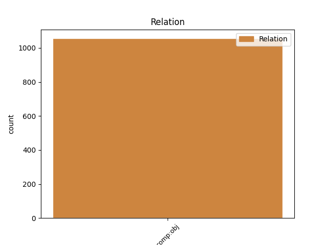
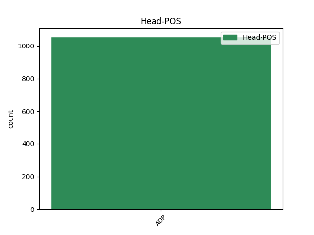
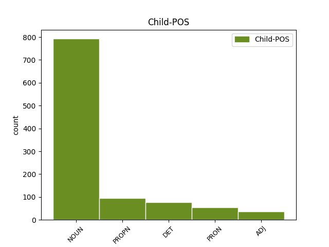

Distribution of features within this leaf



Agreement Rules sorted by frequency.
- When the dependent token is the direct object complements(comp:obj) of the head token, and the head token is ADP and the dependent token is NOUN.
1 od _ _ _ _ 0 _ _ _
2 fructala _ _ _ _ 0 _ _ _
3 voda _ _ _ _ 0 _ _ _
4 samo _ _ _ _ 0 _ _ _
5 da _ _ _ _ 0 _ _ _
6 pač _ _ _ _ 0 _ _ _
7 eee _ _ _ _ 0 _ _ _
8 z z ADP Si Case=Ins 0 _ _ _
9 okusom okus NOUN Ncmsi Case=Ins|Gender=Masc|Number=Sing 8 comp:obj _ msd=Someo|word=okusom
10 ampak _ _ _ _ 0 _ _ _
11 da _ _ _ _ 0 _ _ _
12 ni _ _ _ _ 0 _ _ _
13 nič _ _ _ _ 0 _ _ _
14 drugega _ _ _ _ 0 _ _ _
15 kakor _ _ _ _ 0 _ _ _
16 sama _ _ _ _ 0 _ _ _
17 voda _ _ _ _ 0 _ _ _
18 pa _ _ _ _ 0 _ _ _
19 sadje _ _ _ _ 0 _ _ _
1 od od ADP Sg Case=Gen 0 _ _ _
2 fructala Fructal PROPN Npmsg Case=Gen|Gender=Masc|Number=Sing 1 comp:obj _ msd=Slmer|word=Fruktala
3 voda _ _ _ _ 0 _ _ _
4 samo _ _ _ _ 0 _ _ _
5 da _ _ _ _ 0 _ _ _
6 pač _ _ _ _ 0 _ _ _
7 eee _ _ _ _ 0 _ _ _
8 z _ _ _ _ 0 _ _ _
9 okusom _ _ _ _ 0 _ _ _
10 ampak _ _ _ _ 0 _ _ _
11 da _ _ _ _ 0 _ _ _
12 ni _ _ _ _ 0 _ _ _
13 nič _ _ _ _ 0 _ _ _
14 drugega _ _ _ _ 0 _ _ _
15 kakor _ _ _ _ 0 _ _ _
16 sama _ _ _ _ 0 _ _ _
17 voda _ _ _ _ 0 _ _ _
18 pa _ _ _ _ 0 _ _ _
19 sadje _ _ _ _ 0 _ _ _
1 vaš _ _ _ _ 0 _ _ _
2 komentar _ _ _ _ 0 _ _ _
3 kaj _ _ _ _ 0 _ _ _
4 pravzaprav _ _ _ _ 0 _ _ _
5 vi _ _ _ _ 0 _ _ _
6 eee _ _ _ _ 0 _ _ _
7 o o ADP Sl Case=Loc 0 _ _ _
8 tem ta DET Pd-nsl Case=Loc|Gender=Neut|Number=Sing|PronType=Dem 7 comp:obj _ msd=Zk-sem|word=tem
9 mmm _ _ _ _ 0 _ _ _
10 menite _ _ _ _ 0 _ _ _
11 kako _ _ _ _ 0 _ _ _
12 ste _ _ _ _ 0 _ _ _
13 videli _ _ _ _ 0 _ _ _
14 nebesedno _ _ _ _ 0 _ _ _
15 k _ _ _ _ 0 _ _ _
16 [gap] _ _ _ _ 0 _ _ _
17 komunikacijo _ _ _ _ 0 _ _ _
18 ste _ _ _ _ 0 _ _ _
19 pozorni _ _ _ _ 0 _ _ _
20 na _ _ _ _ 0 _ _ _
21 eem _ _ _ _ 0 _ _ _
22 govorce _ _ _ _ 0 _ _ _
23 pet _ _ _ _ 0 _ _ _
24 jih _ _ _ _ 0 _ _ _
25 je _ _ _ _ 0 _ _ _
26 bilo _ _ _ _ 0 _ _ _
27 kdo _ _ _ _ 0 _ _ _
28 kako _ _ _ _ 0 _ _ _
1 razlike _ _ _ _ 0 _ _ _
2 med med ADP Si Case=Ins 0 _ _ _
3 njimi on PRON Pp3mpi Case=Ins|Gender=Masc|Number=Plur|Person=3|PronType=Prs 2 comp:obj _ msd=Zotmmo|word=njimi
4 ? _ _ _ _ 0 _ _ _
1 eee _ _ _ _ 0 _ _ _
2 v _ _ _ _ 0 _ _ _
3 v v ADP Sl Case=Loc 0 _ _ _
4 glavnem glaven ADJ Agpnsl Case=Loc|Degree=Pos|Gender=Neut|Number=Sing 3 comp:obj _ msd=Ppnsem|word=glavnem
5 hočem _ _ _ _ 0 _ _ _
6 reči _ _ _ _ 0 _ _ _
7 da _ _ _ _ 0 _ _ _
8 to _ _ _ _ 0 _ _ _
9 ni _ _ _ _ 0 _ _ _
10 čas _ _ _ _ 0 _ _ _
11 za _ _ _ _ 0 _ _ _
12 špetir _ _ _ _ 0 _ _ _
13 in _ _ _ _ 0 _ _ _
14 p _ _ _ _ 0 _ _ _
15 [gap] _ _ _ _ 0 _ _ _
16 eee _ _ _ _ 0 _ _ _
17 medsebojno _ _ _ _ 0 _ _ _
18 prepiranje _ _ _ _ 0 _ _ _
19 ampak _ _ _ _ 0 _ _ _
20 eee _ _ _ _ 0 _ _ _
21 da _ _ _ _ 0 _ _ _
22 je _ _ _ _ 0 _ _ _
23 treba _ _ _ _ 0 _ _ _
24 žogo _ _ _ _ 0 _ _ _
25 umiriti _ _ _ _ 0 _ _ _
Disagree Examples:
1 se _ _ _ _ 0 _ _ _
2 smešno _ _ _ _ 0 _ _ _
3 obnašajo _ _ _ _ 0 _ _ _
4 no _ _ _ _ 0 _ _ _
5 zadnje _ _ _ _ 0 _ _ _
6 čase _ _ _ _ 0 _ _ _
7 mislim _ _ _ _ 0 _ _ _
8 sami _ _ _ _ 0 _ _ _
9 so _ _ _ _ 0 _ _ _
10 pripeljali _ _ _ _ 0 _ _ _
11 do _ _ _ _ 0 _ _ _
12 takih _ _ _ _ 0 _ _ _
13 odnosov _ _ _ _ 0 _ _ _
14 kakršni _ _ _ _ 0 _ _ _
15 so _ _ _ _ 0 _ _ _
16 se _ _ _ _ 0 _ _ _
17 mi _ _ _ _ 0 _ _ _
18 zdi _ _ _ _ 0 _ _ _
19 nismo _ _ _ _ 0 _ _ _
20 mi _ _ _ _ 0 _ _ _
21 nič _ _ _ _ 0 _ _ _
22 naredili _ _ _ _ 0 _ _ _
23 pri pri ADP Sl Case=Loc 0 _ _ _
24 temu ta DET Pd-msd Case=Dat|Gender=Masc|Number=Sing|PronType=Dem 23 comp:obj _ msd=Zk-med|word=temu
1 vi _ _ _ _ 0 _ _ _
2 morate _ _ _ _ 0 _ _ _
3 vedeti _ _ _ _ 0 _ _ _
4 da _ _ _ _ 0 _ _ _
5 eee _ _ _ _ 0 _ _ _
6 nekdo _ _ _ _ 0 _ _ _
7 ki _ _ _ _ 0 _ _ _
8 želi _ _ _ _ 0 _ _ _
9 nekoga _ _ _ _ 0 _ _ _
10 umoriti _ _ _ _ 0 _ _ _
11 kot _ _ _ _ 0 _ _ _
12 so _ _ _ _ 0 _ _ _
13 nekateri _ _ _ _ 0 _ _ _
14 patološki _ _ _ _ 0 _ _ _
15 morilci _ _ _ _ 0 _ _ _
16 ki _ _ _ _ 0 _ _ _
17 so _ _ _ _ 0 _ _ _
18 v _ _ _ _ 0 _ _ _
19 zadnjem _ _ _ _ 0 _ _ _
20 času _ _ _ _ 0 _ _ _
21 eden _ _ _ _ 0 _ _ _
22 je _ _ _ _ 0 _ _ _
23 tudi _ _ _ _ 0 _ _ _
24 pred pred ADP Si Case=Ins 0 _ _ _
25 nekaj _ _ _ _ 0 _ _ _
26 časa čas NOUN Ncmsg Case=Gen|Gender=Masc|Number=Sing 24 comp:obj _ msd=Somer|word=časa
27 v _ _ _ _ 0 _ _ _
28 sloveniji _ _ _ _ 0 _ _ _
29 moril _ _ _ _ 0 _ _ _
1 ampak _ _ _ _ 0 _ _ _
2 odločila _ _ _ _ 0 _ _ _
3 sem _ _ _ _ 0 _ _ _
4 se _ _ _ _ 0 _ _ _
5 za za ADP Sa Case=Acc 0 _ _ _
6 petnajst _ _ _ _ 0 _ _ _
7 tisoč _ _ _ _ 0 _ _ _
8 evrov evro NOUN Ncmpg Case=Gen|Gender=Masc|Number=Plur 5 comp:obj _ msd=Sommr|word=evrov
9 nekje _ _ _ _ 0 _ _ _
10 nnn _ _ _ _ 0 _ _ _
11 tako _ _ _ _ 0 _ _ _
12 kot _ _ _ _ 0 _ _ _
13 v _ _ _ _ 0 _ _ _
14 preteklosti _ _ _ _ 0 _ _ _
1 [gap] _ _ _ _ 0 _ _ _
2 pogled _ _ _ _ 0 _ _ _
3 od _ _ _ _ 0 _ _ _
4 zgoraj _ _ _ _ 0 _ _ _
5 na _ _ _ _ 0 _ _ _
6 desni _ _ _ _ 0 _ _ _
7 strani _ _ _ _ 0 _ _ _
8 eee _ _ _ _ 0 _ _ _
9 imate _ _ _ _ 0 _ _ _
10 pogled _ _ _ _ 0 _ _ _
11 od _ _ _ _ 0 _ _ _
12 strani _ _ _ _ 0 _ _ _
13 tole _ _ _ _ 0 _ _ _
14 je _ _ _ _ 0 _ _ _
15 pa _ _ _ _ 0 _ _ _
16 rdeči _ _ _ _ 0 _ _ _
17 premik _ _ _ _ 0 _ _ _
18 se _ _ _ _ 0 _ _ _
19 pravi _ _ _ _ 0 _ _ _
20 kolikokrat _ _ _ _ 0 _ _ _
21 je _ _ _ _ 0 _ _ _
22 bilo _ _ _ _ 0 _ _ _
23 vesolje _ _ _ _ 0 _ _ _
24 manjše _ _ _ _ 0 _ _ _
25 kot _ _ _ _ 0 _ _ _
26 je _ _ _ _ 0 _ _ _
27 danes _ _ _ _ 0 _ _ _
28 [gap] _ _ _ _ 0 _ _ _
29 od _ _ _ _ 0 _ _ _
30 nekih _ _ _ _ 0 _ _ _
31 velikih _ _ _ _ 0 _ _ _
32 številk _ _ _ _ 0 _ _ _
33 proti proti ADP Sd Case=Dat 0 _ _ _
34 nič nič DET Pz-nsl Case=Loc|Gender=Neut|Number=Sing|PronType=Neg 33 comp:obj _ msd=Zl-sem|word=nič
35 in _ _ _ _ 0 _ _ _
36 ničla _ _ _ _ 0 _ _ _
37 je _ _ _ _ 0 _ _ _
38 danes _ _ _ _ 0 _ _ _
39 ena _ _ _ _ 0 _ _ _
40 pomeni _ _ _ _ 0 _ _ _
41 sem _ _ _ _ 0 _ _ _
42 enkrat _ _ _ _ 0 _ _ _
43 manjši _ _ _ _ 0 _ _ _
44 in _ _ _ _ 0 _ _ _
45 približno _ _ _ _ 0 _ _ _
46 enkrat _ _ _ _ 0 _ _ _
47 mlajši _ _ _ _ 0 _ _ _
48 eee _ _ _ _ 0 _ _ _
49 nula _ _ _ _ 0 _ _ _
50 kot _ _ _ _ 0 _ _ _
51 rečeno _ _ _ _ 0 _ _ _
52 danes _ _ _ _ 0 _ _ _
1 ja _ _ _ _ 0 _ _ _
2 zdajle _ _ _ _ 0 _ _ _
3 ima _ _ _ _ 0 _ _ _
4 kolektivnega _ _ _ _ 0 _ _ _
5 imajo _ _ _ _ 0 _ _ _
6 v v ADP Sl Case=Loc 0 _ _ _
7 naš naš DET Ps1msap Case=Acc|Gender=Masc|Number=Sing|Number[psor]=Plur|Person=1|Poss=Yes|PronType=Prs 6 comp:obj _ msd=Zspmetm|word=naš
8 pa _ _ _ _ 0 _ _ _
9 tistih _ _ _ _ 0 _ _ _
10 eee _ _ _ _ 0 _ _ _
11 eee _ _ _ _ 0 _ _ _
12 plače _ _ _ _ 0 _ _ _
13 je _ _ _ _ 0 _ _ _
14 petdeset _ _ _ _ 0 _ _ _
15 procentov _ _ _ _ 0 _ _ _
16 kar _ _ _ _ 0 _ _ _
17 si _ _ _ _ 0 _ _ _
18 doma _ _ _ _ 0 _ _ _
19 ne _ _ _ _ 0 _ _ _